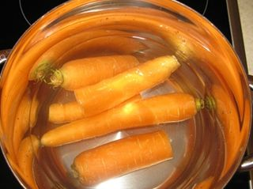
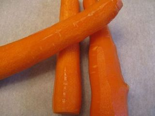
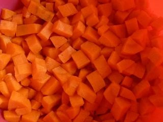
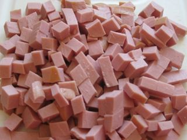
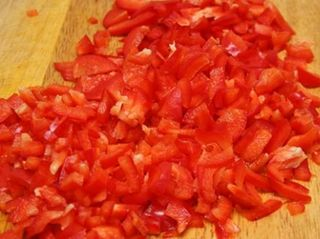
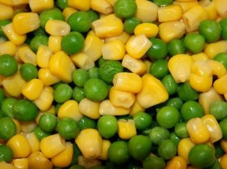
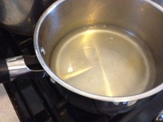
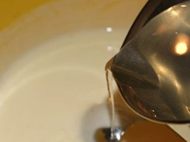
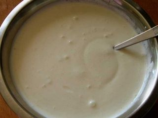
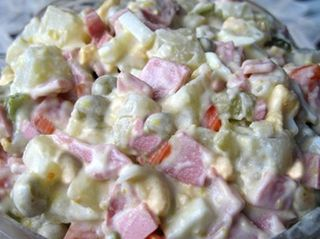

Шаг 1: подготавливаем морковку.

Первым делом хорошо промываем под проточной водой морковь. После выкладываем ингредиент в среднюю кастрюлю и заливаем водой так, чтобы овощ полностью погрузился в жидкость. Ставим на большой огонь кастрюлю. Когда вода начнет закипать, делаем средний огонь и варим компонент до готовности. В среднем по времени это займет около 20-30 минут в зависимости от сорта и размеров овоща.

Вареную морковь с помощью вилки перекладываем из емкости на разделочную доску и ждем, пока ингредиент не остынет до комнатной температуры. Ножом снимаем с морковки шкурку и срезаем хвостик.

На разделочной доске измельчаем компонент на небольшие кубики. А для того, чтобы морковные кусочки нам не мешали, перекладываем их в глубокую миску.
Шаг 2: подготавливаем колбасу.

Для этого салата можно брать не обязательно вареную колбасу. Также блюдо получается вкусным, если в него добавить и копченую колбасу, и вареную курицу или ветчину. То есть, это дело вкуса! Мне нравится вареная колбаса, так как блюдо получается с ней очень нежное и, как по мне, наиболее вкусное. Итак, отчищаем ножом ингредиент от защитной пленки и разрезаем на разделочной доске на небольшие кубики. Измельченный компонент перекладываем в емкость к морковке.
Шаг 3: подготавливаем болгарский перец.

Промываем перец под проточной водой и отчищаем на разделочной доске ножом компонент от хвостика и семян. После – измельчаем овощ на небольшие кубики и перекладываем их в посуду с другими измельченными продуктами.
Шаг 4: подготавливаем кукурузу и горошек.

С помощью консервного ножа открываем банки с кукурузой и горошком. Придерживая крышку банки, сливаем жидкость. С помощью столовой ложки перекладываем поочередно каждый компонент блюда из банки в миску с другими ингредиентами.
Шаг 5: подготавливаем желатин.

В маленькую кастрюлю наливаем очищенную воду. Ставим емкость на огонь и подогреваем воду буквально до хорошо теплого состояния. Всыпаем в жидкость желатин и хорошо перемешиваем смесь до полного растворения желатина.
Шаг 6: подготавливаем заправку для салата.

В среднюю миску выливаем майонез и сметану, присыпаем по вкусу солью и белым молотым перцем. Внимание: эти компоненты должны быть комнатной температуры, поэтому по необходимости заранее достаем их из холодильника. Таким образом, желатин сразу не застынет, а у нас будет время на подготовку ингредиентов. Вливаем в емкость желатиновую смесь и все хорошо перемешиваем ложкой.

У нас должна получится густая однородная масса.
Шаг 7: готовим Салат в желе.

С помощью ложки хорошо перемешиваем все измельченные компоненты в миске. После – вливаем в емкость заправку и еще раз все хорошо перемешиваем ложкой. Затем застилаем пищевой пленкой прямоугольную форму. С помощью ложки пересыпаем нашу салатную смесь из миски в емкость и разравниваем салат, чтобы получилась гладкая поверхность. Ставим в холодильник застывать блюдо на 2 часа.